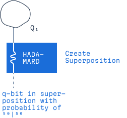

Drag and Drop

Hadamard Gate
Hadamard Gate creates superposition in a qubit by turning into an equal mix of 0 and 1, and 1 into a similar combination with a phase difference. This gives equal chances of measuring 0 or 1.
success!
Hadamard Gate has successfully been applied! Q2 should now be superpositioned. If you perform a measurement cirquit on it now, it should have the value 0 in 50% of all measurements and the value 1 in the other half.